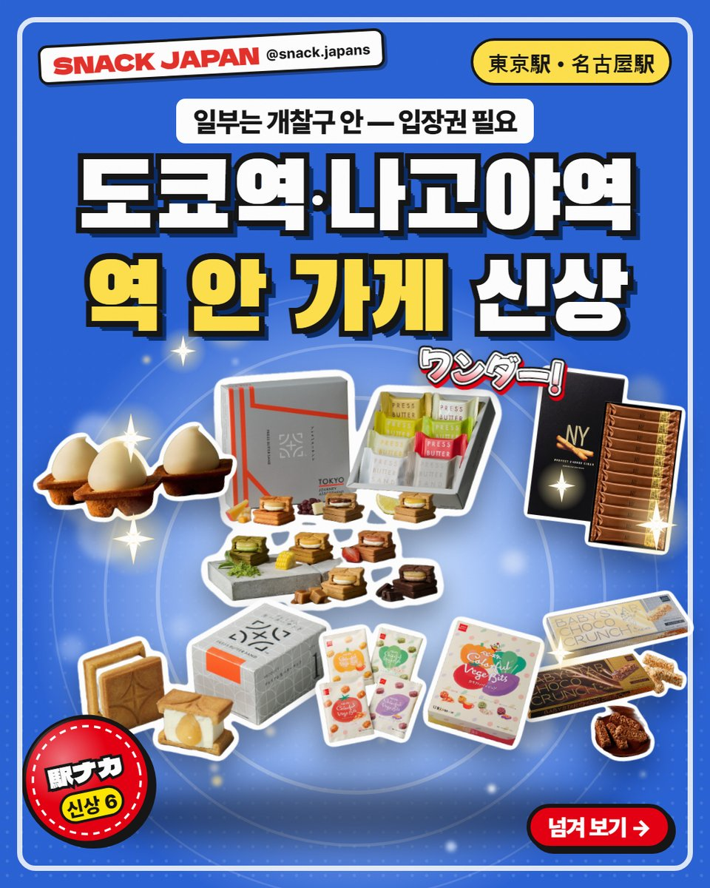
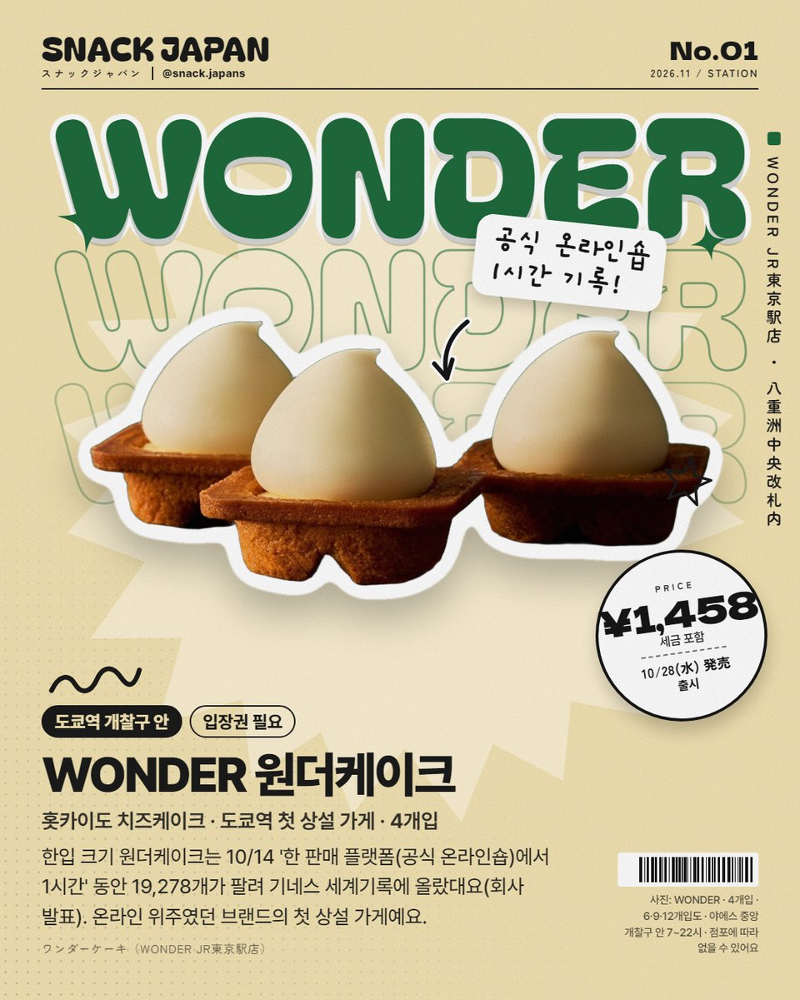
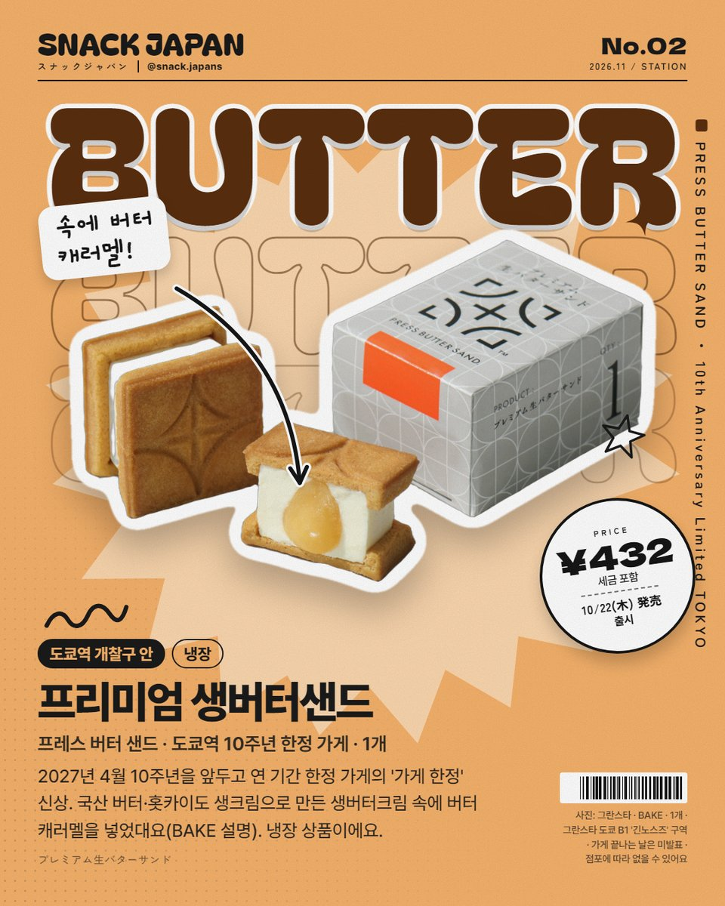
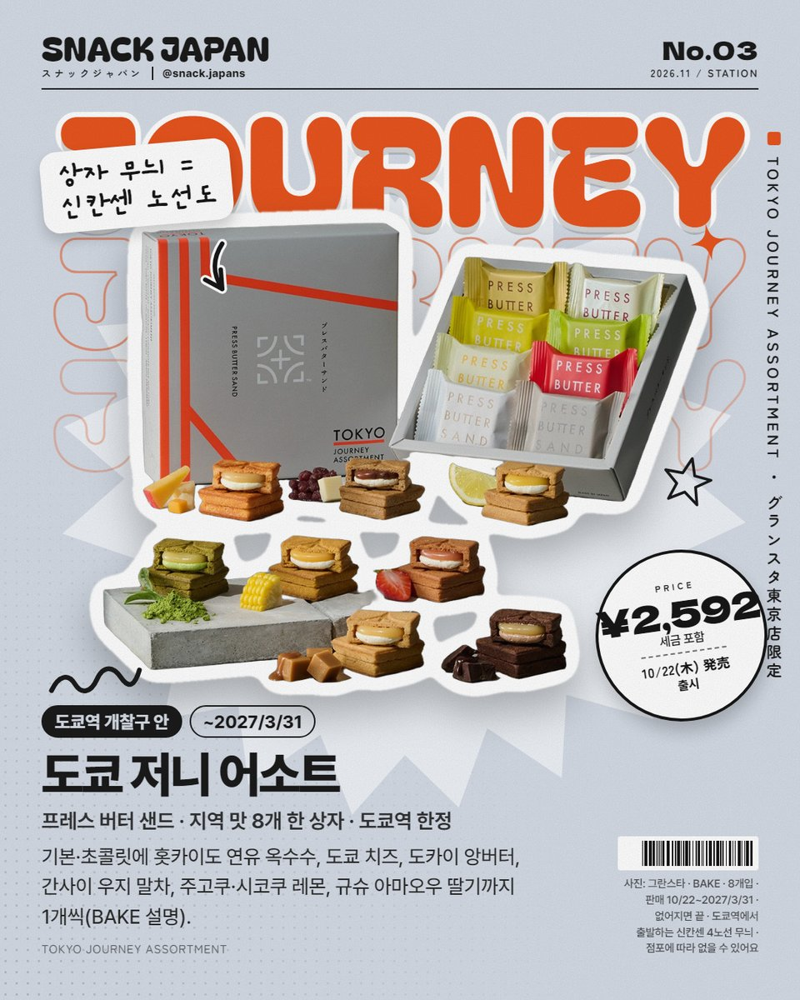
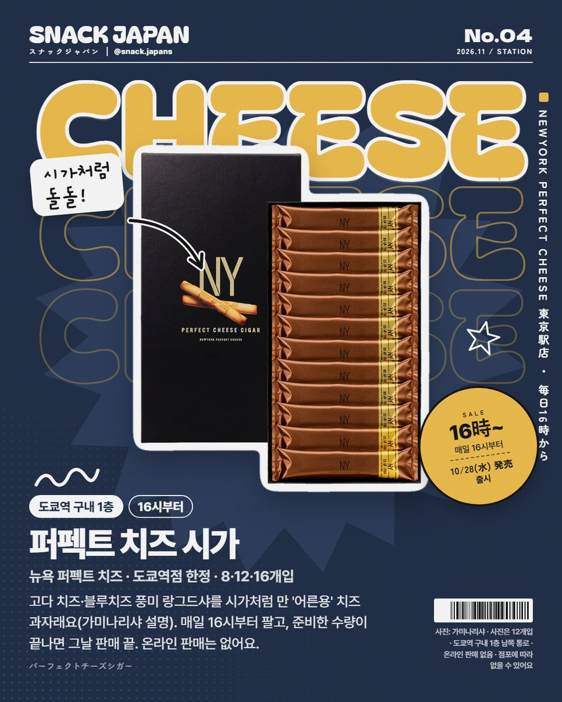
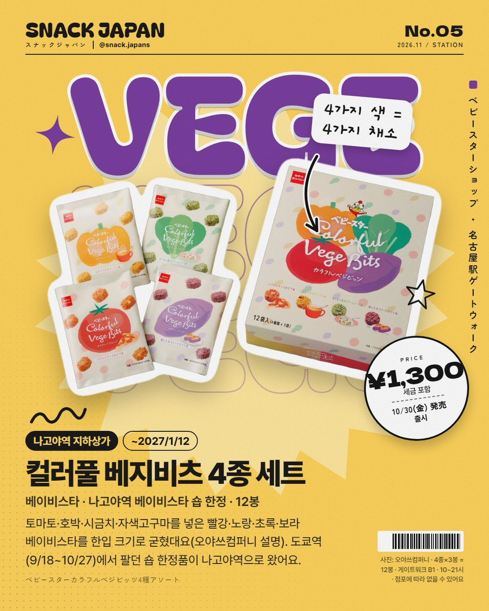
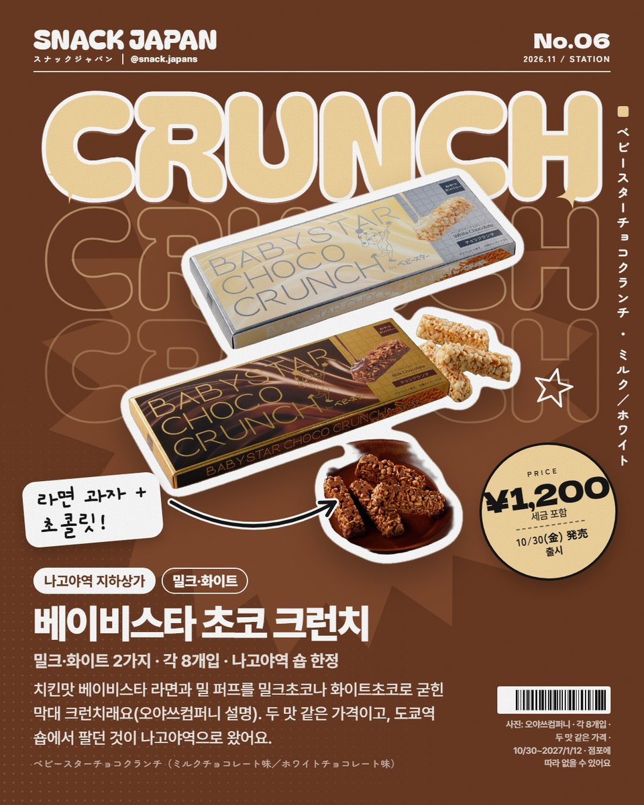
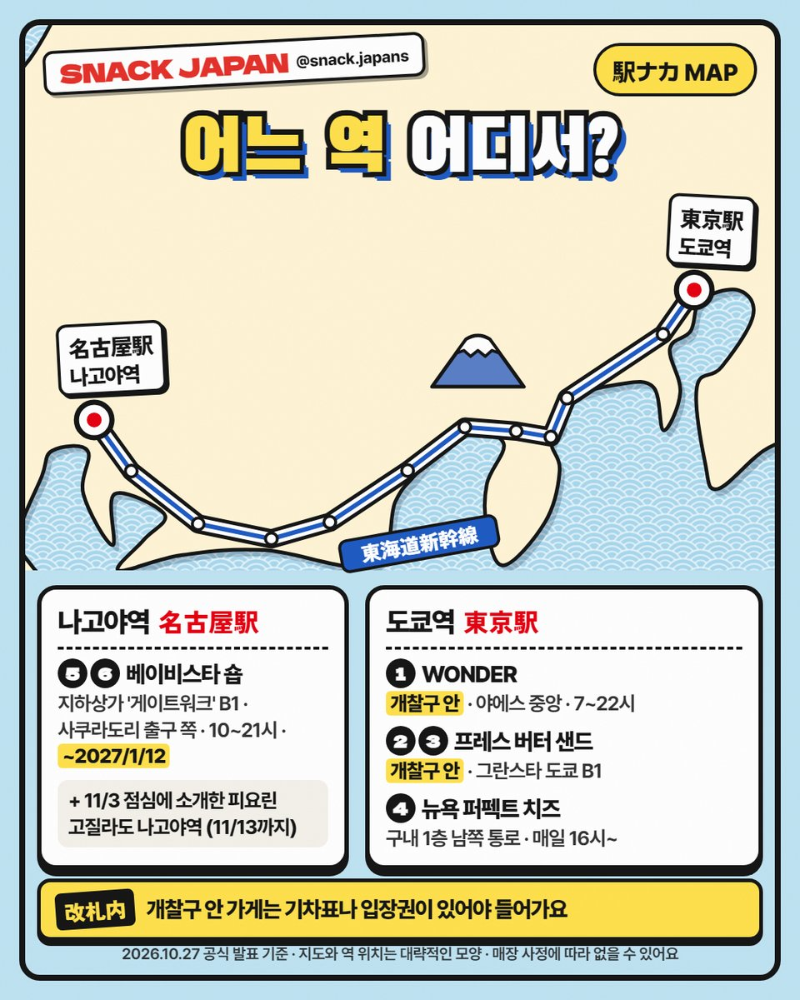

도쿄역 개찰구 안에 문을 연 홋카이도 치즈케이크 첫 상설 가게부터 나고야역 베이비스타 숍 한정품까지! 역 안 가게 신상 6가지를 한 번에 정리했어요.
일본 여행 가면 역에서 과자 사는 거,
은근 재밌지 않아요? 🚄
도쿄역·나고야역 '역 안 가게'에
새로 나온 과자 6가지를 모았어요.
각 회사 공식 발표 기준으로 정리해 볼게요!

역에서만 만나는 신상, 출발! 🚉
1. WONDER 원더케이크 — 도쿄역 첫 상설 가게
온라인 위주였던 홋카이도 치즈케이크 브랜드가
10/28 도쿄역 야에스 중앙 개찰구 안에 첫 상설 가게를 열었어요.
- 한입 크기 '원더케이크'는 10/14 '한 판매 플랫폼(공식 온라인숍)에서 1시간' 동안 19,278개가 팔려 기네스 세계기록에 올랐대요 (회사 발표)
- 영업: 7~22시 (부정기 휴무)
- 개찰구 안이라 기차표나 입장권이 있어야 들어가요
- 가격: 사진 카드에 정리해 뒀어요

기록은 '공식 온라인숍 1시간' 조건이에요 🏆
2. 프레스 버터 샌드 '프리미엄 생버터샌드'
2027년 4월 10주년을 앞두고 연 기간 한정 가게의 '가게 한정' 신상이에요.
- 곳: 그란스타 도쿄 B1 '긴노스즈' 구역 (도쿄역 개찰구 안)
- 국산 버터·홋카이도 생크림 생버터크림 속에 버터 캐러멜 (BAKE 설명)
- 냉장 상품, 1개씩 팔아요
- 2027/8/31까지 열어요 (브랜드 공식 가게 목록 기준)

속에 숨은 버터 캐러멜 찾기 👀
3. 프레스 버터 샌드 '도쿄 저니 어소트'
같은 가게에서만 파는 8개입 상자예요.
- 기본·초콜릿 + 홋카이도 연유 옥수수, 도쿄 치즈, 도카이 앙버터, 간사이 우지 말차, 주고쿠·시코쿠 레몬, 규슈 아마오우 딸기 (BAKE 설명)
- 상자 무늬는 도쿄역에서 출발하는 신칸센 4노선 노선도
- 판매: 10/22~2027/3/31 (없어지면 끝)

한 상자로 일본 한 바퀴 🗾
4. 뉴욕 퍼펙트 치즈 '퍼펙트 치즈 시가'
- 도쿄역 구내 1층 남쪽 통로 '도쿄역점' 한정 (10/28~)
- 고다 치즈·블루치즈 풍미 랑그드샤를 시가처럼 만 '어른용' 치즈 과자 (가미나리야 설명)
- 매일 16시부터, 준비한 수량이 끝나면 그날 판매 끝
- 온라인 판매는 없어요
- 세금 포함 가격은 아직 발표가 없어서 카드에 판매 시각만 적었어요

16시 알람 맞춰 두기 ⏰
5. 나고야역 베이비스타 숍 2종
나고야역 지하상가 '게이트워크'(JR 나고야역 사쿠라도리 출구 쪽 B1)의 베이비스타 숍에서
10/30~2027/1/12 팔아요. (10~21시, 마지막 날은 17시까지)
도쿄역(9/18~10/27)에서 팔던 숍 한정품이 나고야역으로 왔어요.
- 컬러풀 베지비츠 4종 세트: 토마토·호박·시금치·자색고구마를 넣은 4색 베이비스타를 한입 크기로 굳힌 것, 4종×3봉 = 12봉 (오야쓰컴퍼니 설명)
- 초코 크런치: 치킨맛 베이비스타 라면 + 밀 퍼프를 밀크초코·화이트초코로 굳힌 막대, 각 8개입

4가지 색 = 4가지 채소 🍅🎃

라면 과자 + 초콜릿, 이 조합 뭐예요? 🍫
6. 어느 역 어디서?

저장해 두고 역에서 꺼내 보기 📌
- 도쿄역 개찰구 안: 1 WONDER · 2·3 프레스 버터 샌드
- 도쿄역 구내 1층 남쪽 통로: 4 퍼펙트 치즈 시가
- 나고야역 지하상가: 5·6 베이비스타 숍
- 11/3 점심에 소개한 피요린 고질라도 나고야역이에요 (11/13까지)
총평
- 추천: 도쿄역·나고야역에서 신칸센 타는 분, 역에서 기념품 찾는 분
개찰구 안 가게는 기차표나 입장권이 있어야 들어가요.
기차 타기 전에 미리 들러 보세요!
가게 정보 한눈에 보기 · 4곳